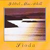

Celtic Lyrics Corner > Artists & Groups > Ishbel MacAskill > Sìoda > Oran Na Maighdinn-mhara
|  | Oran Na Maighdinn-mhara |
| Credits : | James Cameron |
| Appears On : | Sìoda |
| Language : | Gàidhlig (Scottish Gaelic) |
| Lyrics : | English Translation : |
| A mach air bharr nan stuadh ri gaillionn | Out on top of the tempest's crest |
| Fuachd is feannadh fad 'o thìr | Cold so bitter to skin alive |
| Tha mo ghaol dhuit daònan fallainn | My love for you is constant and healthy |
| Ged is Maighdinn mhara mì | Though 'tis a mermaid that I am |
| Sèist : | Chorus (after each verse) : |
| Hùbha i 's na horaibh hùbhaidh | Hùbha i 's na horaibh hùbhaidh |
| Hùbha i 's na horaibh hì | Hùbha i 's na horaibh hì |
| Hùbha i 's na horaibh hùbhaidh | Hùbha i 's na horaibh hùbhaidh |
| 'S ann le foill a mheall thu mì | It was with guile that you cheated me |
| Chaneil mo chadal-sa ach luaineach | My sleep is sporadic |
| 'Nuair bhios buaireas air an tìd' | When the ocean's in turmoil |
| Bha mi 'n raoir an Coirre Bhreacainn | Last night I spent in Corry Vreckan |
| 'S bi mi nochd an Eilean I | And tonight it's in Iona that I'll be |
| Seall is faic an grunnd na fairge | Look and see on the ocean's floor |
| Uamhan airgiod 's òr gun dìth | Endless caves of silver and gold |
| Lainnearachd chan fhaca sùil e | Such glittering beheld by no one |
| Ann an cuirt no lùchairt righ | Even in the courts or palace of kings |